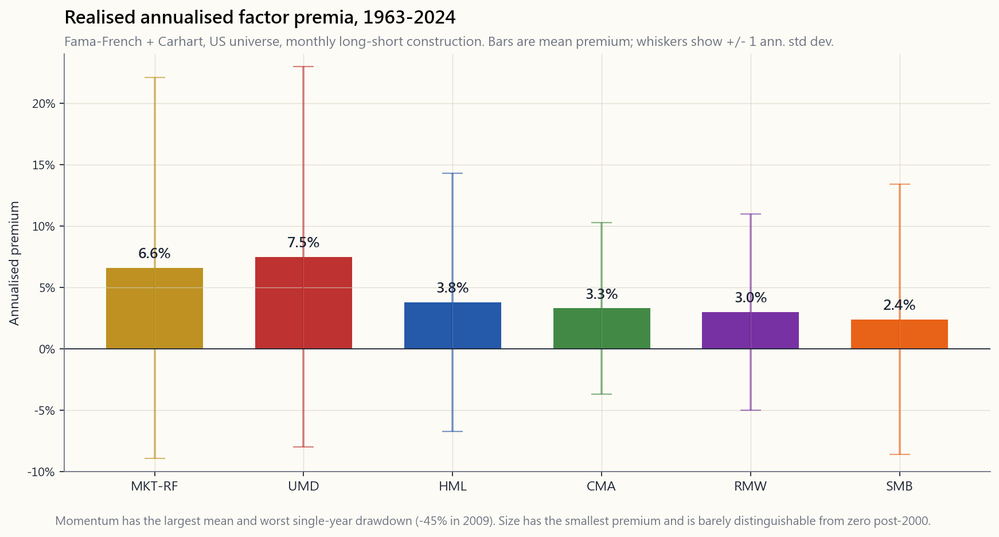
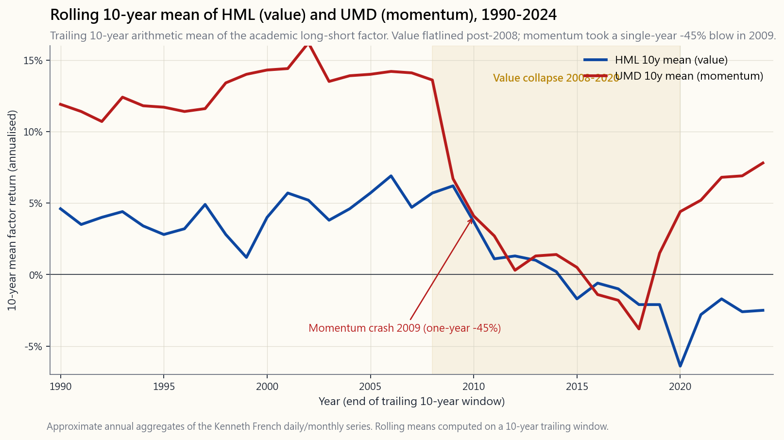

Week 23: Factor Investing — Value, Momentum, Quality, Low-Vol, Size
1. Why This Is Important
For half a century the Capital Asset Pricing Model (CAPM) told a single story: stocks beat bonds because stocks carry more market risk, and the only thing the market rewards is bearing that one risk. One factor. One reward. End of equation. Then in the early 1990s Eugene Fama and Kenneth French sat down with sixty years of CRSP data and discovered that the equation was missing terms. Small companies beat big ones by more than their beta. Cheap (high book-to-market) stocks beat expensive ones. Once they added a size factor and a value factor the residual "alpha" of most US mutual funds collapsed — what looked like stock-picking skill was, on the data, just systematic exposure to factors the manager had never named. By 2015 Fama and French had added profitability (RMW) and investment (CMA), and Mark Carhart had bolted on momentum (UMD) into a six-factor framework that today explains roughly 90% of the cross-section of US equity returns.
This matters for four reasons.
own — a single mutual fund, a 60/40 mix, your spouse's "growth stock" picks — has factor loadings whether you measure them or not. Two portfolios with the same beta and the same expected return can behave very differently in the next regime if one is heavy on value-and-size and the other is heavy on quality-and-low-vol. Factors are how you read what's under the hood.
the S&P by 3% over a decade, the right question isn't "are they good?" — it's "what factor was that?" If their excess return loads onto small-value, you can replicate it with VBR for 7 bps of fee. If it loads onto momentum, you can replicate it with MTUM. The moment a putative "skill" fits inside an academic factor it stops being skill.
handful of structural mispricings worth chasing — liquidity, sector rotation, long-term trends, buying what passive flows have abandoned, and the academic factor premia we're discussing this week — factors are the most systematic and the most crowded — which means they have the lowest barrier to entry and the most compressed forward expected return. They still pay; they just pay less than they did before everyone owned VLUE and MTUM.
AQR, Renaissance, and a hundred lesser stat-arb shops were all running the same factor signals on the same universe, a single mid-August deleveraging event vaporised three years of returns in four days. Factor investing with leverage was the canonical case study in crowded-trade risk. Retail factor ETFs in 2026 are unleveraged, so the blow-up math is gentler — but the compression of premiums is the same disease.
2. What You Need to Know
2.1 What a "factor" actually is
A factor is a long-short portfolio built from a measurable stock characteristic. Take book-to-market: rank every US stock by B/M, go long the top decile, short the bottom decile, weight the legs equally, rebalance monthly. The monthly P&L of that portfolio is the *value factor* (HML — High Minus Low book-to-market). Every factor in the academic literature has the same shape: rank, long top, short bottom, hedge out the market.
That construction matters, because the long-short structure is what strips out the market. A pure value mutual fund is roughly *0.9 of market + 0.4 of HML + noise; the academic HML is the 0.4 of HML* piece on its own, with the market dialled to zero. The factor premium is the average return of that long-short portfolio. Six factors dominate the modern literature: market (MKT-RF), size (SMB — Small Minus Big), value (HML), profitability (RMW — Robust Minus Weak), investment (CMA — Conservative Minus Aggressive), and momentum (UMD — Up Minus Down). The first five are Fama-French 5; adding UMD gives you the FF5 + momentum framework that almost every sell-side risk model in 2026 starts from.

2.2 The historical premia, in one breath
From July 1963 to December 2024, the realised annualised premia for the US factors are roughly: MKT-RF ~6.6%, UMD ~7.5%, HML ~3.8%, CMA ~3.3%, RMW ~3.0%, SMB ~2.4%. Add a low-volatility factor (not in the official Fama-French set but built the same way: long bottom-quintile beta, short top-quintile beta) and you get roughly 1-2% of premium with materially lower standard deviation — which is why low-vol shows up well on a Sharpe-ratio basis even though the raw premium looks small.
A few orderings on this list are surprising. Momentum, the only factor that didn't come out of Fama-French's stable, has the largest premium of any of them — and the worst single drawdown. Size, the factor that started the whole literature, is the smallest premium and arguably indistinguishable from zero post-2000 once you adjust for microcap illiquidity. Value, the factor your wealth manager probably mentions first, is middle-of-the-pack and has *flatlined for the last seventeen years*.
2.3 The factor-decay problem since 2003
Pull up the rolling 10-year HML premium and you'll see something ugly: it averaged about +5% per year from 1963 to roughly 2002, then fell off a cliff. The rolling 10-year ending in 2020 was negative. Between 2008 and 2020, the academic value factor — the long-short construction, not value mutual funds — lost money on average. UMD has its own version of the same disease, with a different shape: a long mean of 7-8% interrupted by the 2009 momentum crash, when the factor drew down roughly 45% in calendar 2009 (and ~83% peak-to-trough) as the market V-bottomed and previously losing junk stocks ripped higher off the lows.

There are three competing explanations for why the premia have compressed, and they're probably all true. First, *publication arbitrage*: every academic factor that gets written up in the JoF attracts capital, and that capital bids up the long leg and sells down the short leg until the premium shrinks. The peer-reviewed finding is the obituary of the trade. Second, *intangibles mis-measurement*: book-to-market punishes asset-light tech firms that show low book equity because their value is in non-capitalised R&D and brand. The HML construction reads them as "expensive" when on a corrected basis they're not. Third, *post-GFC central-bank liquidity*: zero rates compress dispersion across stocks. Everything trades together; nothing trades on fundamentals; nothing is cheap or expensive any more. Pick whichever theory you like — the empirical fact is that the premium has roughly halved versus its pre-2003 mean.
2.4 The 2007 quant quake — what factor crowding actually feels like
The week of August 6, 2007 is the textbook example of factor crowding, and we covered it in detail in Week 14 from the pair-trading angle. Here's the factor-investing version. Every quantitative long-short shop in 2007 was running essentially the same factor portfolio: long value, long momentum, long quality, short the opposite, leveraged 5-8x for risk-target purposes. On August 6 something — most plausibly a multi-strat fund forced to deleverage to meet redemptions in its credit book — started unwinding the standard factor portfolio in size. Because *every other quant fund held the same book*, the unwind didn't find counterparties in the way an idiosyncratic position would; it found a hundred funds all running the same risk model and all stopping out at roughly the same loss threshold, all at the same time. By Friday August 10 the standard factor portfolio had drawn down about 25% — three years of realised premium gone in four trading days. The market itself moved about 1%. The retail tape never noticed.
Two lessons survive from that week. First, *factor exposure is risk even when the factor's beta to the market is zero*. The risk you took wasn't market risk; it was crowded-trade risk. Second, *unleveraged factor exposure is a different animal*. Retail factor ETFs in 2026 have no leverage and no daily VaR-driven stop-out. They can sit through a quant unwind and just take the temporary mark. The blow-up math is mostly a leverage-and-redemption problem, not a factor problem per se.
2.5 The retail factor ETF menu in 2026
The factor literature got cheap and scalable. iShares and Vanguard between them now run the standard menu of single-factor ETFs at expense ratios between 8 and 25 bps:
- VLUE (iShares MSCI USA Value Factor) — value tilt, 0.08% ER.
- MTUM (iShares MSCI USA Momentum Factor) — momentum tilt, 0.15% ER.
- QUAL (iShares MSCI USA Quality Factor) — RMW-flavoured quality
- USMV (iShares MSCI USA Min Vol Factor) — low-volatility tilt,
- IWM / IJR (iShares Russell 2000 / S&P SmallCap 600) — size
- AVUV / AVDV (Avantis US / International Small Value) —
You can build a respectable multi-factor blend with four of these tickers, total expense ratio under 0.20%, and you've replicated what hedge funds were charging 2-and-20 for in 2003. The premium has compressed, but so has the cost of harvesting it — and the net premium (gross minus fee minus tax drag) is roughly the same as it was for the leveraged hedge funds twenty years ago, because the fee compression has roughly matched the premium compression. Cheap beta ate expensive alpha.
2.6 Where this fits in the bigger picture
Factor investing is the most structural of the available alpha lanes — and the least idiosyncratic. It scales infinitely (any size of capital can run it), it requires no special information, and the academic literature documenting it is freely available on SSRN. That's also exactly why the premium has compressed: anything anyone can run, eventually everyone runs. Compare that to "buying what passive flows have abandoned" (the contrarian sector trade): that requires discomfort, requires being early, requires holding through a period when nobody else does. The factor trade requires only that you click VLUE and forget about it. The market is efficient at arbitraging away premium that requires no discomfort to capture.
The implication for your own book: factors belong in the *passive core (the foundational, lowest-active tranche), not in the active sleeve*. A modest tilt — 10-20% of your equity allocation in QUAL or AVUV versus a market-cap-weighted core — gets you most of the diversification benefit without taking concentrated factor-blow-up risk. Putting 100% of your equity in MTUM is taking the 2009-style tail risk; putting 10% in MTUM and 90% in VTI gets you 80% of the long-run mean and 20% of the tail.
3. Common Misconceptions
one factor of six. The Fama-French framework is a system: each factor is a separate long-short portfolio, and a "factor investor" usually owns several of them. Calling factor investing "value" is like calling exercise "running."
realised premium of the headline factors, around 2.4% annualised. Most of the gap shows up only in the bottom microcap quintile, which has serious illiquidity issues. The "small-cap effect" you hear about is mostly a small-value effect — value, not size, doing the work.
1990s."* The academic UMD factor is cross-sectional*: rank stocks by their past 12-month return (skip the most recent month), go long the winners, short the losers, monthly rebalance. Trend-following in commodities is time-series: long if the asset itself is up, short if it's down. Different construction, different correlation, different drawdown profile.
compressed, not disappeared. Even at half their pre-2003 means, a four-factor multi-factor blend has positive expected excess return net of fees in 2026. What's dead is the leveraged-quant version from 2007 — the unleveraged retail-ETF version is alive but smaller.
over 400 "factors" in published papers, most of which fail to replicate out of sample. The Fama-French 5 plus momentum is the conservative consensus. Anyone selling you exposure to a 20-factor model is selling overfit.
partly, but mostly low-vol works because of leverage aversion: most institutional investors can't lever, so to get equity-like returns they crowd into high-beta stocks, bidding their prices up and their forward returns down. Low-beta stocks get under-bid as a result. Take away leverage constraints and the premium would shrink — which is partly why hedge-fund "betting against beta" strategies have done well.
companies tend to be lower-vol) but diverge in stress: in 2008-09, USMV-style low-vol got hammered along with everything else as correlations went to 1, while QUAL-style quality (high ROE, low debt) outperformed. Different definitions, different risk shapes.
premium."* Monthly rebalancing for a single* factor (the academic construction) is correct. For a multi-factor blend held in retail ETFs, monthly rebalancing has a tax cost that often exceeds the rebalancing benefit. Annual rebalance is a defensible compromise for taxable accounts.
The 2007 event was about leverage and *redemption-driven deleveraging*, not factors per se. An unleveraged retail factor blend in a taxable account doesn't have the same blow-up topology. The risk is forgone return (factors compress further), not catastrophic loss.
The premium has halved since 2003, which is the strong-form version of "everyone knows." It hasn't gone to zero because (a) a lot of capital still cares more about benchmark tracking than about factor exposure, and (b) some of the premium is risk-compensation that doesn't go away just because the risk is well-understood. The remaining premium is the residual after the arbitrageable portion has been arbed out.
4. Q&A Section
Q1: Should I replace my S&P 500 fund with a multi-factor ETF? No — keep the cap-weighted core for cost, tax, and tracking-error reasons, then tilt with 10-30% of your equity allocation toward factors. The cap-weighted core gets you the market premium for almost no cost; the factor tilt gets you the (compressed) factor premium on top. Replacing the core with a factor product takes on tracking-error risk you usually don't need.
Q2: Which single factor is best? Long-run, momentum has the highest gross premium and the highest volatility — so it has the worst tail (2009) and the best mean. Quality has the best Sharpe ratio. Value has the best valuation case in 2026 because it's the most beaten-down. Pick by your tolerance for which kind of regret: missing-the-rally (avoid momentum) or the-thing-keeps-getting-cheaper (avoid value).
Q3: How long should a factor go through a drawdown before I quit? Long enough that the answer should be "I won't quit." HML drew down for thirteen years from 2007 to 2020 before the 2021-22 value rally. If you can't sit through a decade-plus drawdown of the factor you tilted to, you don't have the conviction to harvest it; you'll sell at the bottom and miss the rebound. If 13 years sounds intolerable, don't tilt — own the cap-weighted index.
Q4: Why is small-value (AVUV) so popular if size is a weak factor? Because the interaction of size and value (and profitability) is where the literature still finds robust premium. Small junk stocks underperform; small value-with-profitability stocks have a materially better historical profile than either size or value alone. AVUV is built around that interaction.
Q5: Are factors correlated with each other? Some are highly correlated (HML and CMA), some are negatively correlated (HML and UMD historically — value and momentum are partial hedges for each other), and some are weakly correlated (SMB with everything). A multi-factor blend gets diversification benefit because the factors aren't perfectly correlated. The HML/UMD negative correlation is the single most useful pairing for a retail blend: when one is in a drawdown the other is often having a good year.
Q6: Does international factor investing work? The academic premia replicate internationally (developed and EM) with similar magnitudes and similar 2003-2020 compression. We stay US-only for investability reasons (FX, custody, tax, information disadvantage), but the academic story is broadly international, not US-specific.
**Q7: How do I tell if my actively-managed mutual fund is just running a factor tilt?** Run a regression of the fund's monthly excess returns against the six factors (you can pull the data free from Ken French's website). If the R-squared is over 0.90 and four or more factor loadings are statistically significant, the fund's performance is mostly factor exposure, and you should compare its fee against the factor-replication ETF cost. Morningstar Direct and Portfolio Visualizer both run this regression for free; there's no reason to pay an active manager for what amounts to a buyable factor blend.
Q8: What about the "low-vol anomaly" — isn't it a free lunch? It's the closest thing the equity market has to a free lunch on a Sharpe basis, but it's not free. Low-vol underperforms in melt-up regimes (think 1999, 2020-21) and tracks-error materially against the cap-weighted index. The factor pays for itself in risk-adjusted terms over a full cycle, but the absolute return drag versus the S&P during a tech-led rally can be 10-15% over two years.
Q9: Did the 2009 momentum crash kill momentum forever? No — UMD has had positive returns in most years since 2009, and the post-2010 mean is roughly half the long-run mean (still positive, just smaller). The 2009 crash is a permanent feature of momentum's return distribution, not a one-off — there were similar (smaller) momentum crashes in 1932, 2002, and a mini one in March 2020. Owning momentum means accepting that one out of every twenty years it loses 30%+.
Q10: Should I time my factor exposures based on valuation? Empirically yes — Cliff Asness's "Value of Everything" research shows that the valuation spread of a factor (cheap-leg P/B vs expensive-leg P/B) predicts the factor's forward 5-year return. In 2026 the value factor is at the cheap end of its history (so the forward expected premium is above the long-run mean) and momentum is near the expensive end. But this is a slow-moving overlay, not a trading rule — you adjust 10-20% of your tilt every few years, not every quarter.
Q11: How does factor investing fit with the four-tranche framework? Factors live in tranche one (the passive core) and tranche two (the slightly-active tilt). They do not belong in tranche three (the active concentrated book) or tranche four (the convex tail). A factor blend isn't trying to compound 30% — it's trying to add 50-100 bps a year to your passive return at modest tracking error. That's the tranche-one-and-two job description.
Q12: What's a reasonable multi-factor blend for 2026? A defensible starter: 60% VTI (cap-weighted core), 10% AVUV (small-value-quality), 10% MTUM (momentum), 10% QUAL (quality), 10% USMV (low-vol). Total ER under 12 bps. This gives you all six factor tilts at modest weights, with cap-weighted core dominating. Annual rebalance. If you can hold this through a 30% momentum drawdown without selling, you'll harvest most of what's left of the academic factor premium.
第23週：因子投資——價值、動量、質量、低波幅、規模
1. 為何這至關重要
半個世紀以來，資本資產定價模型（CAPM）只說了一個故事：股票跑贏債券，因為股票承擔更多市場風險，而市場唯一獎勵的就是承擔這一種風險。一個因子，一種回報，方程式到此為止。直到1990年代初，尤金·法馬（Eugene Fama）與肯尼思·法蘭奇（Kenneth French）坐下來，翻閱六十年的CRSP數據，發現方程式遺漏了項目。小型公司跑贏大型公司的幅度，遠超其貝塔所能解釋的範圍。低價（高賬面市值比）股票跑贏高價股票。一旦加入規模因子與價值因子，大多數美國互惠基金的殘差「阿爾法」便崩塌了——數據顯示，那些看似選股能力的東西，不過是對基金經理從未明言的因子的系統性暴露。到2015年，法馬與法蘭奇再加入盈利能力（RMW）與投資（CMA），馬克·卡哈特（Mark Carhart）則把動量（UMD）接合其上，形成六因子框架，如今可解釋美國股票截面回報約90%的差異。
這一點重要，原因有四。
2. 你需要知道的事
2.1 「因子」究竟是什麼
因子是一個多空投資組合，由可量化的股票特徵建構而成。以賬面市值比為例：將每一隻美國股票按賬面市值比排名，買入最高十分位，沽空最低十分位，兩邊等權配置，每月再平衡。該投資組合每月的損益，便是價值因子（HML——高賬面市值比減低賬面市值比）。學術文獻中的每個因子，形式如出一轍：排名、買入頂部、沽空底部、對沖市場。
這個建構方式很重要，因為多空結構正是剝離市場因素的關鍵。一隻純粹的價值互惠基金，大致相當於0.9個市場加上0.4個HML加上雜音；學術上的HML，是單獨的0.4個HML部分，市場成分被撥到零。因子溢價就是該多空投資組合的平均回報。六個因子主導了現代文獻：市場（MKT-RF）、規模（SMB——小型減大型）、價值（HML）、盈利能力（RMW——穩健減薄弱）、投資（CMA——保守減激進）、動量（UMD——上漲減下跌）。前五個是法馬-法蘭奇五因子（FF5）；加上UMD便是FF5加動量框架，這也是2026年幾乎所有賣方風險模型的起點。
2.2 歷史溢價，一氣呵成
從1963年7月至2024年12月，美國因子的已實現年化溢價大致如下：MKT-RF約6.6%、UMD約7.5%、HML約3.8%、CMA約3.3%、RMW約3.0%、SMB約2.4%。若加上低波幅因子（不在官方法馬-法蘭奇體系之內，但建構方式相同：買入最低五分位貝塔，沽空最高五分位貝塔），約得1-2%的溢價，而且標準差明顯更低——這正是低波幅因子即使原始溢價看起來偏小，在夏普比率基礎上仍然表現突出的原因。
這份清單有幾處排名令人意外。動量是唯一不出自法馬-法蘭奇體系的因子，卻擁有最大的溢價——以及最慘烈的單次回撤。規模，啟動了整個文獻的因子，溢價最小，2000年後一旦調整微型股流動性溢價，溢價或許已與零無異。價值，你的財富管理人最常提起的因子，排名居中，而且過去十七年已基本橫行。
2.3 2003年以來的因子衰退問題
拉出HML滾動10年溢價，你會看到一幅醜陋的圖像：從1963年到大約2002年，該數字平均每年約+5%，然後跌落懸崖。截至2020年的滾動10年數字是負值。從2008年到2020年，學術價值因子——多空建構，並非價值互惠基金——平均虧損。UMD有其自身版本的同一種病，形狀不同：長期均值為7-8%，卻被2009年動量崩潰打斷，當年UMD的回撤約為45%（峰至谷約83%），彼時市場V形觸底，此前表現落後的垃圾股從低位急速反彈。
關於溢價為何受壓縮，學界有三種相互競爭的解釋，三種可能同時成立。首先是發表套利：每個在《金融學期刊》刊登的學術因子都會吸引資金湧入收割溢價，資金抬高多頭腿並打壓空頭腿，直至溢價收窄。同儕評審論文就是這筆交易的訃告。其次是無形資產錯誤計量：賬面市值比是為工業經濟設計的1963年指標，它懲罰的是那些賬面股本偏低的輕資產科技企業——因為它們的價值在於未資本化的研發支出和品牌。HML的建構方式將它們讀取為「昂貴」，但在修正後的基礎上並非如此。第三是後金融海嘯央行流動性：零利率壓縮股票間的離散度。所有東西一起交易，沒有什麼基於基本面的交易，沒有什麼真正便宜或昂貴的東西。無論你偏好哪種理論——實證事實是，溢價相比2003年前的均值已大致減半。
2.4 2007年量化地震——因子擁擠的真實感受
2007年8月6日那一週，是因子擁擠的教科書案例，我們在第14週已從配對交易的角度詳細介紹過。以下是因子投資的版本。2007年，每一家量化多空基金——AQR、文藝復興、高盛GEO及數十家規模較小的同類公司——基本上運行著相同的因子投資組合：買入價值、買入動量、買入質量，沽空對立面，為達到風險目標而施加五至八倍槓桿。8月6日，某人——最可能是一家多策略基金，被迫去槓桿以應對信貸業務的贖回——開始大規模平倉標準因子投資組合。由於每一家量化基金持有相同的帳簿，平倉行動找不到對手盤，就像一筆個別倉位那樣；它遭遇的，是一百家全都運行著相同風險模型的基金，全都在大約相同的虧損閾值同時止蝕。到8月10日（星期五），標準因子投資組合已回撤約25%——三年的已實現溢價，在四個交易日內蒸發。大市指數本身僅移動約1%。零售市場從未察覺。
那一週留下兩個教訓。第一，即使因子對市場的貝塔為零，因子暴露仍然是風險。你承擔的風險不是市場風險，而是擁擠交易風險。第二，無槓桿的因子暴露是另一種動物。2026年的零售因子交易所買賣基金沒有槓桿，也沒有每日風險值驅動的止損。它們可以撐過量化基金平倉，只是承受暫時性的賬面虧損。爆倉的數學，本質上是槓桿加贖回的問題，而非因子本身的問題。
2.5 2026年零售因子交易所買賣基金菜單
因子文獻已變得低廉且可規模化。貝萊德（iShares）與先鋒（Vanguard）合計現已提供標準的單因子交易所買賣基金菜單，開支比率介乎8至25個基點：
- VLUE（iShares MSCI美國價值因子）——價值傾斜，開支比率0.08%。
- MTUM（iShares MSCI美國動量因子）——動量傾斜，開支比率0.15%。
- QUAL（iShares MSCI美國質量因子）——RMW風格的質量傾斜，開支比率0.15%。按資產管理規模計為同類中最大。
- USMV（iShares MSCI美國最低波幅因子）——低波幅傾斜，開支比率0.15%。
- IWM / IJR（iShares羅素2000指數 / 標普小型股600指數）——通過小型股暴露實現規模傾斜，開支比率0.19% / 0.06%。
- AVUV / AVDV（Avantis美國 / 國際小型價值股）——兼顧規模、價值及盈利能力傾斜，開支比率0.25%。2020年代學術因子學派的旗艦產品。
2.6 這在大局觀中的位置
因子投資是現有阿爾法賽道中最結構化的一條，也是最缺乏個別性的一條。它可以無限擴展（任何規模的資金都可以運行）、不需要特殊資訊，記錄它的學術文獻在SSRN上免費取閱。這也正是溢價受壓縮的原因：任何人都可以運行的東西，最終人人都在運行。相比之下，「買入被被動資金流棄守的標的」（反向板塊交易）則需要忍受不適，需要提前布局，需要在無人認同時繼續持有。因子交易只需要你點擊VLUE然後置之不理。市場善於套利那些無需承受不適便可捕獲的溢價。
對你自己帳簿的啟示：因子屬於被動核心（基礎性的、主動程度最低的一層），而非主動配置倉位。適度的傾斜——將股票配置的10-20%放在QUAL或AVUV，相對於市值加權的核心——可以在不承擔集中因子爆倉風險的情況下，獲得大部分分散投資組合的好處。將100%股票配置放在MTUM，承受的是2009年式的尾部風險；放10%在MTUM、90%在VTI，可以獲得長期均值的80%，以及20%的尾部風險。
3. 常見誤解
4. 問答環節
問題一：我應該把標普500指數基金換成多因子交易所買賣基金嗎？ 不應該——保留市值加權核心，以獲得成本、稅務及追蹤誤差方面的優勢，然後以股票配置的10-30%傾斜至因子。市值加權核心幾乎零成本地為你取得市場溢價；因子傾斜在此基礎上為你捕獲（已收縮的）因子溢價。以因子產品取代核心，承擔的是通常不必要的追蹤誤差風險。
問題二：哪個單一因子最好？ 從長期看，動量的毛溢價最高，波動性也最高——所以它有最差的尾部（2009年）和最高的均值。質量的夏普比率最佳。在2026年，價值的估值理由最充分，因為它是跌得最深的一個。根據你對哪種遺憾的承受能力來選擇：踏空反彈（避開動量）或標的持續下跌（避開價值）。
問題三：一個因子經歷多久的回撤後，我才應該退出？ 答案應該是「我不會退出」，才算足夠長。從2007年到2020年，HML持續回撤了十三年，直到2021-22年的價值股反彈。如果你無法撐過所傾斜因子長達十年以上的回撤，你便沒有足夠的信念去收割它；你會在底部賣出，然後錯過反彈。如果13年聽起來難以忍受，不要傾斜——持有市值加權指數基金。
問題四：如果規模是個弱因子，為何AVUV如此受歡迎？ 因為文獻至今仍發現規模與價值（加上盈利能力）的交互作用具有穩健的溢價。小型垃圾股跑輸大市；小型兼具盈利能力的價值股，其歷史表現顯著優於單獨的規模或價值因子。AVUV正是圍繞這種交互作用建構的。
問題五：因子之間是否相關？ 部分因子高度相關（HML與CMA），部分負相關（歷史上HML與UMD——價值與動量是彼此的部分對沖），部分弱相關（SMB與其他幾乎不相關）。多因子組合獲得分散投資效益，正是因為因子之間並非完全相關。HML與UMD的負相關，是零售組合中最有用的配對：當一個陷入回撤，另一個往往表現良好。
問題六：國際因子投資有效嗎？ 學術溢價在國際市場（發達市場及新興市場）也能複製，幅度相近，2003-2020年的壓縮程度也類似。我們出於投資可行性（外匯、託管、稅務、資訊劣勢）而僅聚焦美國，但學術故事在廣義上是國際性的，而非美國獨有。
問題七：如何判斷我的主動管理互惠基金只是在運行因子傾斜？ 將基金的每月超額回報對六個因子進行回歸（數據可從肯尼思·法蘭奇的網站免費下載）。若R平方超過0.90，且四個或以上因子負荷具統計顯著性，該基金的表現主要來自因子暴露，你應該將其費用與因子複製交易所買賣基金的費用作比較。晨星（Morningstar）Direct及Portfolio Visualizer均可免費運行此回歸；沒有理由向主動基金經理付費，換取實際上可以購買到的因子組合。
問題八：「低波幅異常」——這難道不是免費午餐嗎？ 從夏普比率的角度看，這是股票市場中最接近免費午餐的東西，但並非全免。低波幅在暴漲行情（想想1999年、2020-21年）中跑輸大市，且相對市值加權指數有顯著的追蹤誤差。該因子在整個周期以風險調整後的角度衡量是合算的，但在科技股領漲的反彈期間，相對標普500的絕對回報拖累，兩年內可高達10-15%。
問題九：2009年動量崩潰是否永遠終結了動量？ 不——UMD在2009年以後的大多數年份都取得正回報，2010年後的均值約為長期均值的一半（仍為正，只是更小）。2009年的崩潰是動量回報分佈的永久性特徵，而非偶發事件——1932年、2002年曾出現類似（但規模更小）的動量崩潰，2020年3月也有小型崩潰。持有動量，意味著接受每二十年左右有一年虧損30%以上。
問題十：我應否根據估值來擇時調整因子敞口？ 從實證角度看，是的——克里夫·阿斯尼斯（Cliff Asness）的「萬物皆有價值」研究表明，因子的估值利差（低廉腿的市賬率相對昂貴腿的市賬率）可以預測因子未來5年的回報。在2026年，價值因子處於其歷史上偏便宜的一端（意味著未來預期溢價高於長期均值），而動量處於偏昂貴的一端。但這是緩慢移動的覆蓋層，而非交易規則——每幾年調整傾斜的10-20%，而非每季調整。
問題十一：因子投資如何融入四層架構？ 因子屬於第一層（被動核心）和第二層（略帶主動的傾斜）。它們不屬於第三層（主動集中倉位）或第四層（凸性尾部）。因子組合的目標不是複利增長30%——而是以適度的追蹤誤差，在被動回報基礎上每年額外貢獻50-100個基點。這是第一層和第二層的職責描述。
問題十二：2026年合理的多因子組合是什麼？ 一個站得住腳的起點：60%放在VTI（市值加權核心），10%放在AVUV（小型價值質量），10%放在MTUM（動量），10%放在QUAL（質量），10%放在USMV（低波幅）。總開支比率低於12個基點。這讓你以適度的權重獲得全部六個因子傾斜，並以市值加權核心為主。每年再平衡。如果你能在不賣出的情況下撐過動量30%的回撤，你將收割到學術因子溢價中所剩餘的大部分。
第23週：因子投資——價值、動能、品質、低波動性、規模
1. 為什麼這很重要
半個世紀以來，資本資產定價模型（CAPM）只講述一個故事：股票勝過債券，因為股票承擔更高的市場風險，而市場唯一獎勵的就是承擔這一種風險。一個因子。一種報酬。方程式結束。然後在1990年代初，Eugene Fama與Kenneth French坐下來，研究六十年的CRSP資料，發現這個方程式缺少了幾項。小公司的表現優於大公司，幅度超過其貝塔所能解釋的範圍。便宜的（高帳面市值比）股票勝過昂貴的股票。一旦他們加入規模因子和價值因子，大多數美國共同基金的殘差「阿爾法」便瓦解了——看起來像是選股能力的東西，在數據上不過是系統性的因子曝險，而基金經理從未明確說明。到了2015年，Fama與French又加入了獲利能力（RMW）和投資（CMA），Mark Carhart則將動能（UMD）納入其中，形成一個六因子框架，如今可以解釋美國股票橫截面報酬約90%的變異。
這有四個重要原因。
2. 你需要知道的事
2.1 「因子」究竟是什麼
因子是一個由可衡量股票特徵構建的多空投資組合。以帳面市值比為例：對每支美國股票按B/M排名，做多前十分位，放空後十分位，兩腿等權重，每月再平衡。該投資組合的每月損益就是價值因子（HML——高帳面市值比減低帳面市值比）。學術文獻中的每個因子都具有相同的形狀：排名、多頭前端、空頭後端、剔除市場影響。
這個建構方式很重要，因為多空結構剔除了市場因素。一支純價值型共同基金大致上是0.9倍市場敞口加0.4倍HML加雜訊；學術上的HML是單獨的0.4倍HML部分，市場敞口調整為零。因子溢價是該多空投資組合的平均報酬。現代文獻中有六個主要因子：市場（MKT-RF）、規模（SMB——小型股減大型股）、價值（HML）、獲利能力（RMW——強勁減疲弱）、投資（CMA——保守減積極），以及動能（UMD——漲幅股減跌幅股）。前五個是Fama-French五因子；加入UMD便形成FF5加動能的框架，幾乎是2026年所有賣方風險模型的起點。
2.2 歷史溢價，一覽無遺
從1963年7月到2024年12月，美國因子的實際年化溢價大致如下：MKT-RF約6.6%、UMD約7.5%、HML約3.8%、CMA約3.3%、RMW約3.0%、SMB約2.4%。若加入低波動性因子（不在官方Fama-French體系內，但建構方式相同：做多低貝塔五分位，放空高貝塔五分位），溢價約為1至2%，但標準差顯著較低——這也是為什麼低波動性因子在夏普比率上表現良好，即使原始溢價看起來偏小。
這份清單中有幾個順序令人驚訝。動能是唯一不源自Fama-French體系的因子，卻擁有所有因子中最高的溢價——以及最大的單次回撤。規模，這個開創了整個文獻的因子，是最小的溢價，在調整微型股流動性不足後，2000年後的溢價甚至接近於零。價值，你的財富管理人最常提到的因子，處於中游，而且在過去十七年幾乎沒有任何表現。
2.3 2003年以來的因子衰退問題
拉出HML滾動10年溢價的圖表，你會看到一些令人不安的現象：從1963年到大約2002年，平均每年約+5%，然後急劇下滑。滾動10年至2020年的溢價是負值。負值。在2008年至2020年間，學術價值因子——多空建構，不是價值型共同基金——平均虧損。UMD也有類似的問題，但形態不同：長期均值為7至8%，但在2009年動能崩盤時被打斷，當市場V形反彈，之前虧損的垃圾股從低點急速拉升，因子在2009年整個日曆年內回撤約45%（峰值至谷底約83%）。
溢價壓縮的競爭性解釋有三個，而且可能都是正確的。第一，發表套利：每個在《金融期刊》發表的學術因子都會吸引資金，資金買高了多頭端、賣低了空頭端，直到溢價收窄。同行評審的發現是這筆交易的訃聞。第二，無形資產衡量失準：帳面市值比懲罰了輕資產的科技公司，這些公司的帳面價值較低，是因為其價值體現在未資本化的研發費用和品牌中。HML的建構將其讀為「昂貴」，但在更正確的衡量標準下，它們並非如此。第三，後金融危機中央銀行的流動性：零利率壓縮了股票之間的離散度。所有東西一起交易；沒有東西根據基本面交易；沒有東西再顯得便宜或昂貴。你可以選擇自己喜歡的理論——實證事實是，溢價相較於2003年前的均值大約減半了。
2.4 2007年量化基金動盪——因子擁擠實際上是什麼感覺
2007年8月6日那週是因子擁擠的教科書案例，我們在第14週從配對交易的角度詳細討論過。以下是因子投資的版本。2007年每家量化多空機構基本上都在運行相同的因子投資組合：做多價值、做多動能、做多品質，放空相反方向，為了風險目標而槓桿5至8倍。在8月6日，某個——最有可能是某個多策略基金，被迫在信貸帳簿出現贖回時去槓桿——開始大規模平倉標準因子投資組合。由於其他所有量化基金都持有相同的部位，平倉找不到對手方，就像一個特定部位原本可以找到對手方一樣；它遇到的是數百家運行相同風險模型、在大約相同損失門檻時同時停損的基金。到8月10日週五，標準因子投資組合已回撤約25%——三年的實現溢價在四個交易日內消失殆盡。大盤本身移動了約1%。零售端的行情幾乎沒有察覺到。
那週留下兩個教訓。第一，即使因子的市場貝塔為零，因子曝險仍是風險。你承擔的不是市場風險，而是擁擠交易風險。第二，無槓桿的因子曝險是完全不同的動物。2026年的零售因子指數股票型基金沒有槓桿，也沒有每日風險值驅動的停損。它們可以撐過量化基金的平倉潮，只是暫時承受帳面損失。爆倉的邏輯基本上是槓桿和贖回的問題，而非因子本身的問題。
2.5 2026年零售因子指數股票型基金選單
因子文獻已變得便宜且可擴展。iShares和Vanguard合計推出了標準的單因子指數股票型基金選單，費用率介於8至25個基點之間：
- VLUE（iShares MSCI美國價值因子）——價值傾斜，0.08%費用率。
- MTUM（iShares MSCI美國動能因子）——動能傾斜，0.15%費用率。
- QUAL（iShares MSCI美國品質因子）——RMW風格品質傾斜，0.15%費用率。按資產管理規模計為該族群中最大。
- USMV（iShares MSCI美國最小波動性因子）——低波動性傾斜，0.15%費用率。
- IWM / IJR（iShares羅素2000 / S&P小型股600）——透過小型股曝險實現規模傾斜，0.19% / 0.06%費用率。
- AVUV / AVDV（Avantis美國 / 國際小型價值股）——結合規模、價值及獲利能力傾斜，0.25%費用率。2020年代學術因子流派的代表性產品。
2.6 這與整體框架的關係
因子投資是所有可用阿爾法路徑中最結構化的，也是最無特殊性的。它可以無限擴展（任何規模的資金都可以運行），不需要特殊資訊，記錄它的學術文獻可在SSRN上免費取得。這也正是溢價已壓縮的原因：任何人都可以運行的東西，最終所有人都會去運行。相比之下，「買進被被動式投資流拋棄的標的」（逆向類股交易）：那需要不適感，需要提早進場，需要在沒有其他人跟進的時候堅持持有。因子交易只需要你點選VLUE然後忘記它。市場在套利那些無需忍受不適就能捕捉的溢價方面是有效率的。
對你自己的帳戶而言，其含意是：因子屬於被動式核心（基礎性最低主動交易的部分），而非主動操作部分。適度傾斜——將股票配置的10至20%投入QUAL或AVUV，而非市值加權核心——能讓你獲得大部分的分散投資效益，而不會承擔集中的因子爆倉風險。將100%的股票配置於MTUM是在承擔2009年式的尾部風險；將10%配置於MTUM、90%配置於VTI，可以讓你獲得長期均值的80%，同時只承擔20%的尾部風險。
3. 常見的錯誤認知
4. 問答區
Q1：我應該用多因子指數股票型基金取代我的S&P 500基金嗎？ 不——保留市值加權核心，理由是成本、稅賦和追蹤誤差，然後將股票配置的10至30%傾斜至因子。市值加權核心以幾乎零成本為你帶來市場溢價；因子傾斜在此基礎上為你帶來（已壓縮的）因子溢價。用因子產品取代核心會增加你通常不需要承擔的追蹤誤差風險。
Q2：哪個單一因子最好？ 長期而言，動能的毛溢價最高，波動性也最高——因此尾部最差（2009年）但均值最好。品質的夏普比率最佳。在2026年，價值在估值角度最具說服力，因為它是最被打壓的。根據你能忍受哪種遺憾來選擇：錯過上漲行情（避免動能）或持有的東西持續下跌（避免價值）。
Q3：一個因子要經歷多長的回撤，我才應該放棄？ 應該長到「我不會放棄」的程度。HML從2007年到2020年連續回撤長達十三年，然後才在2021至2022年的價值股反彈中回升。如果你無法撐過你所傾斜的因子長達十年以上的回撤，你就沒有收割它的決心；你會在底部賣出並錯過反彈。如果13年聽起來難以忍受，請不要傾斜——持有市值加權指數基金。
Q4：如果規模是弱因子，為什麼小型價值股（AVUV）那麼受歡迎？ 因為規模和價值（以及獲利能力）的交互作用才是文獻仍然發現穩健溢價之處。小型垃圾股表現不佳；小型具獲利能力的價值股的歷史表現，在實質上優於單獨的規模或價值因子。AVUV正是圍繞著這種交互作用而建構的。
Q5：各因子之間有相關性嗎？ 有些高度相關（HML和CMA），有些負相關（歷史上HML和UMD——價值和動能互為部分避險），有些弱相關（SMB與所有其他因子）。多因子混合投資組合能獲得分散投資效益，正是因為各因子並非完全相關。HML/UMD的負相關是零售混合中最有用的配對：當一個處於回撤時，另一個通常表現良好。
Q6：國際因子投資有效嗎？ 學術溢價在國際市場（已開發市場和新興市場）同樣能複製，量級相似，2003至2020年的壓縮情況也類似。我們基於可投資性原因（匯率、保管、稅賦、資訊劣勢）而僅關注美國市場，但學術上的故事大體上是國際性的，並非美國專有。
Q7：我如何判斷我的主動式管理共同基金是否只是在運行因子傾斜？ 對基金每月超額報酬相對於六個因子進行回歸分析（你可以從Ken French的網站免費下載資料）。如果R平方超過0.90，且四個或更多因子的荷載具有統計顯著性，則該基金的表現主要是因子曝險，你應該將其費用與因子複製指數股票型基金的成本進行比較。Morningstar Direct和Portfolio Visualizer都可以免費進行此回歸；沒有理由為實質上是可購買因子混合投資組合的東西向主動式基金經理付費。
Q8：「低波動性異常」——難道這不是免費的午餐嗎？ 以夏普比率衡量，這是股票市場最接近免費午餐的東西，但它並非免費。低波動性在融漲的市場環境中表現遜色（想想1999年、2020至2021年），且相對於市值加權指數存在顯著的追蹤誤差。該因子在完整週期內以風險調整後角度計算是合算的，但在科技股主導的上漲行情中，相對於S&P的絕對報酬落差在兩年內可能達到10至15%。
Q9：2009年的動能崩盤是否永遠終結了動能？ 不——UMD在2009年後的大多數年份都取得正報酬，2010年後的均值約為長期均值的一半（仍為正值，只是更小）。2009年的崩盤是動能報酬分布的永久特徵，而非一次性事件——1932年、2002年以及2020年3月的小型崩盤中都有類似（規模較小）的情況。持有動能意味著接受每二十年中有一年會虧損30%以上。
Q10：我應該根據估值對我的因子曝險進行擇時操作嗎？ 實證上是的——Cliff Asness的《萬物皆有價值》研究顯示，因子的估值利差（便宜端股價淨值比相對於昂貴端股價淨值比）能預測因子未來5年的報酬。2026年，價值因子處於歷史低估端（因此未來預期溢價高於長期均值），動能則接近高估端。但這是緩慢移動的疊加策略，而非交易訊號——你每隔幾年調整10至20%的傾斜，而非每季調整。
Q11：因子投資如何與四部分框架相配合？ 因子存在於第一部分（被動式核心）和第二部分（輕微主動的傾斜）。它們不屬於第三部分（主動式集中部位）或第四部分（凸性尾部部位）。因子混合投資組合的目標不是複利30%——而是以適度的追蹤誤差在被動式報酬之上每年增加50至100個基點。這是第一和第二部分的工作描述。
Q12：2026年一個合理的多因子混合投資組合是什麼？ 一個合理的起點：60%配置VTI（市值加權核心），10%配置AVUV（小型價值品質股），10%配置MTUM（動能），10%配置QUAL（品質），10%配置USMV（低波動性）。總費用率低於12個基點。這讓你以適中的權重獲得所有六個因子傾斜，由市值加權核心主導。每年再平衡一次。如果你能在動能回撤30%時堅持不賣，你將收割大部分剩餘的學術因子溢價。
第23周：因子投资——价值、动量、质量、低波动与规模
1. 为什么这一议题至关重要
半个世纪以来，资本资产定价模型（CAPM）只讲一个故事：股票跑赢债券，是因为股票承担了更多市场风险，而市场唯一奖励的，就是承担这一种风险。一个因子，一种回报，方程式到此为止。直到1990年代初，尤金·法玛与肯尼斯·弗伦奇坐下来，翻阅了CRSP数据库六十年的记录，发现这个方程式还缺了几项。小公司跑赢大公司的幅度，远超其贝塔所能解释的范围；低价（高账面市值比）股票跑赢高价股票。一旦纳入规模因子与价值因子，大多数美国共同基金残余的"阿尔法"便土崩瓦解——在数据面前，那些看起来是选股功力的东西，不过是对基金经理从未明确点名的因子的系统性敞口。到2015年，法玛与弗伦奇又加入了盈利能力（RMW）与投资（CMA）两个因子，马克·卡哈特则将动量（UMD）嵌入其中，共同构建出一套六因子框架，如今已能解释美国股票横截面收益约90%的变异。
这套框架之所以重要，有四个理由。
2. 你需要掌握的知识
2.1 "因子"究竟是什么
因子是一个由可量化股票特征构建而成的多空组合。以账面市值比为例：对所有美国股票按账面市值比排名，做多最高十分位，做空最低十分位，两腿等权，每月再平衡。该多空组合的月度盈亏，就是价值因子（HML——高账面市值比减低账面市值比）。学术文献中每一个因子的构建方式都如出一辙：排名、做多顶端、做空底端、对冲市场。
这一构建方式至关重要，因为多空结构本身就剥离了市场因素。一只纯粹的价值共同基金，大致等于"0.9个市场敞口 + 0.4个HML敞口 + 噪音"；而学术意义上的HML，是那个单独的"0.4个HML"，市场敞口归零。因子溢价就是该多空组合的平均收益。现代文献中占主导地位的六个因子是：市场（MKT-RF）、规模（SMB——小市值减大市值）、价值（HML）、盈利能力（RMW——盈利稳健减盈利偏弱）、投资（CMA——保守投资减激进投资）、以及动量（UMD——上涨减下跌）。前五个构成法玛-弗伦奇五因子模型；加上UMD，便是2026年几乎所有卖方风险模型的出发点——FF5加动量框架。
2.2 历史溢价一览
从1963年7月至2024年12月，美国各因子的实现年化溢价大致为：MKT-RF约6.6%、UMD约7.5%、HML约3.8%、CMA约3.3%、RMW约3.0%、SMB约2.4%。另有低波动性因子（不在法玛-弗伦奇官方体系之内，但构建方式相同：做多最低贝塔五分位、做空最高贝塔五分位），溢价约1-2%，但标准差明显更低——这正是低波动性因子在夏普比率维度上表现亮眼的原因，尽管其原始溢价看似微薄。
这份清单中有几个排名令人意外。动量是其中唯一不出自法玛-弗伦奇门下的因子，却拥有所有因子中最高的溢价，以及最惨烈的单次回撤。规模，这个开启整个文献先河的因子，溢价却是最小的，甚至在2000年之后对微盘股的非流动性做出调整后，溢价几乎无从与零区分。价值，你的财富管理顾问最先提到的那个因子，处于中游，且过去十七年基本横盘。
2.3 2003年后的因子衰退问题
调出HML滚动10年溢价，你会看到一幅令人不安的图景：从1963年到大约2002年，该数字平均每年约+5%；此后断崖式下跌。截至2020年的滚动10年溢价为负。2008年至2020年间，学术意义上的价值因子——多空构建，而非价值共同基金——平均亏损。UMD的情形与之类似，只是形态不同：长期均值7-8%，被2009年动量崩溃打断——当市场在全球金融危机后V形触底反弹、此前跌幅惨重的垃圾股大幅拉升时，该因子在2009年全年回撤约45%（峰值至谷底约83%）。
关于溢价压缩，学界有三种竞争性解释，它们很可能都成立。第一，发表套利：每当一个学术因子在《金融学杂志》上发表，资金便涌入套利，买高多头腿、卖低空头腿，直至溢价收窄。同行评审论文，即是这笔交易的讣告。第二，无形资产错量：账面市值比是为工业经济设计的1963年式指标，它惩罚了那些账面净资产低是因为其价值体现于未资本化研发和品牌的轻资产科技公司。HML将它们识别为"贵"，而经过校正后它们未必如此。第三，后全球金融危机时代的央行流动性：零利率压缩了股票间的离散度，一切随大流，没有什么真正的基本面定价，也没有什么真正的便宜或昂贵。随便你选哪种理论——实证事实是溢价相对于2003年前的均值大约腰斩。
2.4 2007年量化基金地震——因子拥挤的真实感受
2007年8月6日那一周，是因子拥挤的教科书式案例，我们在第14周已从配对交易的视角详细剖析过。以下是因子投资的版本。2007年，每一家量化多空机构——AQR、文艺复兴、高盛GEO，以及数十家中小型机构——运行的因子组合几乎如出一辙：做多价值、做多动量、做多质量，做空其反面，出于风险目标而施加5-8倍杠杆。8月6日，某家机构——最有可能是一家多策略基金为应对其信用账户的赎回而被迫去杠杆——开始大规模平仓标准因子组合。由于其他所有量化基金持有同一本书，平仓并未找到对手盘——它找到的是一百家跑着相同风险模型、在大致相同的亏损阈值下同时止损的基金。到8月10日星期五，标准因子组合已回撤约25%——三年的实现溢价，四个交易日清零。大盘涨跌不过1%，零售端的行情从未察觉。
那一周留下两条经验教训。其一，因子敞口本身就是风险，即便因子对市场的贝塔为零。彼时你承担的不是市场风险，而是拥挤交易风险。其二，无杠杆的因子敞口是另一回事。2026年的零售因子交易所交易基金没有杠杆，没有每日风险价值驱动的止损机制，可以熬过量化平仓潮，只是承受暂时的账面亏损。爆仓数学，本质上是杠杆与赎回的问题，而非因子本身的问题。
2.5 2026年零售因子交易所交易基金菜单
因子文献已变得廉价且易于规模化操作。贝莱德和先锋两家，如今以8至25个基点的费用率运营着涵盖主要单因子的交易所交易基金标准菜单：
- VLUE（iShares MSCI美国价值因子）——价值倾斜，费用率0.08%。
- MTUM（iShares MSCI美国动量因子）——动量倾斜，费用率0.15%。
- QUAL（iShares MSCI美国质量因子）——RMW风格的质量倾斜，费用率0.15%。按规模管理资产居首。
- USMV（iShares MSCI美国最小波动性因子）——低波动性倾斜，费用率0.15%。
- IWM / IJR（iShares罗素2000 / 标普小盘600）——通过小盘敞口实现规模倾斜，费用率0.19% / 0.06%。
- AVUV / AVDV（Avantis美国/国际小盘价值）——规模+价值+盈利能力复合倾斜，费用率0.25%。2020年代学术因子流派的旗帜产品。
2.6 这一切在大框架中的位置
因子投资是可用阿尔法通道中最具结构性的，也是最缺乏特殊性的。它可以无限扩容（任何规模的资金都能运行），不需要特殊信息，记录它的学术文献在SSRN上免费可得。这也恰恰是溢价压缩的原因：任何人都能运行的东西，最终人人都会去运行。与之相比，"买入被被动资金流弃置的东西"（逆向板块交易）：那需要忍受不适，需要提前布局，需要在没有旁人认可的时候坚守。因子交易只需要你点击VLUE然后置之不理。市场在套利一切无需不适即可获取的溢价这件事上，效率极高。
对于你自己账户的启示：因子属于被动核心（基础性、主动程度最低的那一档），而非主动部分。适度的倾斜——将10-20%的股票配置放在QUAL或AVUV，而非市值加权的核心——即可获得大部分分散化收益，而不必承担集中因子爆仓的风险。将全部股票仓位押注于MTUM，是在承担2009年式的尾部风险；将10%放在MTUM、90%放在VTI，则能获得长期均值的80%，以及20%的尾部风险。
3. 常见误解
4. 问答环节
Q1：我应该用多因子交易所交易基金取代标普500指数基金吗？ 不——保留市值加权的核心仓位，出于成本、税务和跟踪误差方面的考量，然后将10-30%的股票配置倾斜至因子。市值加权核心以几乎可以忽略的成本为你赚取市场溢价；因子倾斜在此之上叠加（已压缩的）因子溢价。用因子产品替换核心仓位，会承担通常并不必要的跟踪误差风险。
Q2：哪个单一因子最好？ 从长期看，动量的毛溢价最高，波动性也最高——尾部最糟糕（2009年），均值最优。质量的夏普比率最好。价值在2026年有最充分的估值理由，因为它是跌得最惨的。按照你对哪种遗憾更能承受来选择：踏空反弹（避开动量），还是越跌越便宜（避开价值）。
Q3：一个因子在回撤中撑多久我才应该放弃？ 久到答案应该是"我不会放弃"。HML从2007年到2020年足足回撤了十三年，才迎来2021-22年的价值股行情。如果你熬不过自己倾斜的因子长达十年以上的回撤，你就没有收割它的信念——你会在底部卖出，错过反弹。如果13年听起来难以忍受，就不要倾斜——持有市值加权指数基金。
Q4：如果规模因子效果不明显，为什么AVUV这么受追捧？ 因为文献仍在规模与价值（以及盈利能力）的交叉项中发现了稳健的溢价。小盘垃圾股表现不佳；小盘有盈利能力的价值股的历史表现，明显优于单独的规模因子或价值因子。AVUV正是围绕这一交叉项构建的。
Q5：各因子之间有相关性吗？ 有些高度相关（HML与CMA），有些负相关（历史上HML与UMD呈负相关——价值与动量互为部分对冲），有些弱相关（SMB与其他因子关系普遍较弱）。多因子混合组合之所以能获得分散化收益，正是因为各因子之间并非完全相关。HML与UMD的负相关关系，是零售混合组合中最实用的配对：一个处于回撤期时，另一个往往表现不错。
Q6：国际因子投资有效吗？ 学术溢价在国际市场（发达市场和新兴市场）均有复现，量级相近，2003-2020年的压缩幅度也相仿。我们出于可投资性原因（外汇、托管、税务、信息劣势）坚持美国市场，但学术逻辑并不局限于美国，具有广泛的国际适用性。
Q7：如何判断我的主动管理共同基金其实只是在运行因子倾斜？ 用基金月度超额收益对六个因子做回归（数据可免费从肯·弗伦奇官网下载）。若R²超过0.90且四个或以上因子载荷具有统计显著性，该基金的表现主要来自因子敞口，你应将其费用率与因子复制型交易所交易基金的成本对比。Morningstar Direct和Portfolio Visualizer均可免费进行此回归；没有理由为本质上可购买的因子混合组合向主动基金经理支付管理费。
Q8：关于"低波动性异常"——它是免费的午餐吗？ 它是股票市场中最接近夏普比率维度免费午餐的东西，但并非真的免费。低波动性在市场狂欢阶段表现落后（参见1999年、2020-21年），且相对市值加权指数存在显著跟踪误差。该因子在完整周期内以风险调整后回报计是合算的，但在科技股主导的牛市中，相对标普500的绝对收益拖累可能在两年内达到10-15%。
Q9：2009年动量崩溃是否彻底终结了动量因子？ 没有——2009年以后大多数年份UMD均录得正收益，2010年后的均值约为长期均值的一半（仍为正值，只是更小）。2009年的崩溃是动量收益分布的永久特征，而非一次性事件——1932年、2002年以及2020年3月均发生过类似（规模较小的）动量崩溃。持有动量，意味着接受每二十年中有一年亏损超过30%。
Q10：我应该根据估值水平择机调整因子敞口吗？ 实证上是肯定的——克利夫·阿斯内斯的"万物价值"研究表明，因子的估值利差（多头腿市净率与空头腿市净率之比）能预测该因子未来5年的收益。2026年，价值因子处于其历史的便宜端（预期溢价高于长期均值），动量则接近贵端。但这是缓慢演进的覆盖层，而非交易信号——你每隔数年调整倾斜幅度的10-20%，而非每季度都动。
Q11：因子投资与四档框架如何对应？ 因子属于第一档（被动核心）和第二档（适度主动倾斜）。它们不属于第三档（主动集中持仓）或第四档（凸性尾部）。因子混合组合的目标不是实现30%的复利增长——而是在适度跟踪误差下，每年为被动收益额外贡献50-100个基点。这正是第一档和第二档的职责所在。
Q12：2026年一个合理的多因子混合组合应该是什么样的？ 一个有说服力的起点：60%的VTI（市值加权核心），10%的AVUV（小盘价值质量），10%的MTUM（动量），10%的QUAL（质量），10%的USMV（低波动性）。总费用率低于12个基点。这一配置以适中权重覆盖全部六个因子倾斜，市值加权核心占主导。年度再平衡，持有十年以上，不要因为某一倾斜出现30%回撤就卖出。能做到这一点，你便能收割学术因子溢价中剩余的大部分。